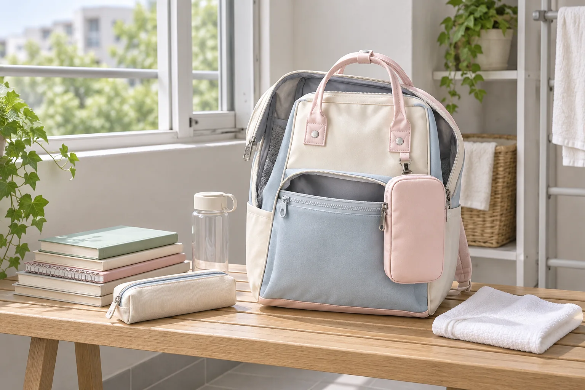

가방 냄새가 느껴질 때, 안의 물건부터 나누어 본다

가방에서 낯선 냄새가 느껴지면 탈취 제품을 먼저 찾게 될 수 있습니다. 어떤 물건이 안에 남았는지와 원단 상태를 보기 전에 향을 더하면 지금 살필 대상을 구별하기 어려울 수 있습니다. 내용물을 모두 꺼내고 가방과 소지품을 나누어 보는 준비부터 시작합니다. 짧은 환기 시간을 일괄로 정하기보다 실제로 남은 물기와 관리가 필요한 항목을 찾아봅니다.
가방과 안에 있던 물건을 분리한다
큰 칸에서 실제 작은 포켓까지 하나씩 비웁니다. 사용한 손수건이나 음식 포장, 우산 커버가 남았는지 봅니다. 물건을 꺼낸 위치를 정해두면 어떤 묶음이 어느 공간에 오래 있었는지 읽을 수 있습니다. 내용물을 한꺼번에 다른 가방으로 옮기기보다 각 물건의 상태를 먼저 확인합니다. 정리할 소품과 다시 사용할 준비가 된 소품을 나누면 가방을 관리한 뒤 그대로 같은 구성을 되넣지 않을 수 있습니다.
용기와 파우치도 안에 무엇이 남았는지 살펴봅니다. 빈 물병이나 사용한 천처럼 개인 관리가 필요한 물건은 각 안내에 맞춰 정리합니다. 가방의 냄새라고 바로 판단하기 전에 소품 묶음과 빈 가방에서 느끼는 상태를 각각 봅니다. 원인을 확정하기 어려우면 어떤 물건을 꺼냈고 어디에서 변화가 느껴졌는지 메모할 수 있습니다. 물건의 이름과 보관 위치를 연결하면 다음 문의에서도 설명할 단서가 됩니다.
바닥 모서리나 솔기 주변에는 작은 부스러기가 남아 있는지 봅니다. 손이나 도구를 넣기 전에 안쪽의 실제 구조를 확인합니다. 원단을 무리하게 뒤집거나 느슨한 실을 잡아당기며 청소하지 않습니다. 사용하는 가방이 허용하는 마른 정리 방법을 읽고 그 범위에서 처리합니다. 무엇이 붙어 있는지 모르면 세정제를 먼저 적시기보다 현재 상태를 확인하고 필요한 관리 질문을 남깁니다.
공기를 바꾸는 일과 물기를 말리는 일
제품 관리 안내에 맞춰 여밈을 열고 안정된 형태로 둘 자리를 정합니다. 통로를 막거나 젖은 소품 위에 놓는 자리가 아닌지 주변을 봅니다. 가방 안에 물기가 있다면 짧게 열어두었다는 사실만으로 다음 사용 준비가 되었다고 판단하지 않습니다. 겉과 안쪽의 상태를 각각 보고 필요한 관리를 이어갑니다. 몇 분이라는 숫자를 모든 가방과 상황에 적용하기보다 현재 상태를 기준으로 합니다.
소지품도 따로 정리합니다. 우산 커버나 천을 가방 밖에서 관리하고 제품 안내에 맞는 상태가 된 뒤 다시 준비합니다. 용기는 뚜껑과 각 구성품의 관리 안내를 확인합니다. 깨끗한 파우치에 들어 있다는 사실만으로 안의 물건까지 관리가 끝났다고 보지 않습니다. 작은 소품들이 다시 돌아올 상태인지 읽으면 가방을 비운 준비와 다음 외출의 준비가 연결됩니다.
Himawari No.1027을 정리할 때에는 사용한 소품을 꺼낸 뒤 실제 내부 상태와 제품의 관리 안내를 함께 봅니다. 세트에 별도 부품이 있다면 그 부품의 상태도 나누어 확인합니다. 냄새를 감추는 소품을 새로 넣기보다 오늘 사용한 천과 포장, 용기가 돌아갈 위치를 정합니다. 가방에 남길 묶음과 관리할 묶음이 구별되어 있으면 다음날 준비할 항목도 보입니다.

액체 제품은 소재 이름을 읽은 뒤
탈취제나 향수, 세정제를 사용할 생각이라면 가방의 관리 표시와 해당 제품의 적용 대상을 확인합니다. 외관이나 색만 보고 어느 원단과 코팅인지 판단하지 않습니다. 가방의 안내에서 허용하는 방법이 있는지 읽고, 불분명하면 판매처나 제조사에 필요한 정보를 문의합니다. 다른 가방에서 쓴 제품을 현재 가방에도 같은 방식으로 사용하기보다 제품별 관리 범위를 구별합니다.
사용 안내를 읽어도 원인이나 처리 방법이 분명하지 않다면 상태를 설명할 자료를 남길 수 있습니다. 언제 처음 느꼈는지, 비를 맞거나 특정 소품을 오래 넣어둔 일이 있는지 관찰한 내용을 적습니다. 냄새의 종류만으로 원단 손상이나 위생 상태를 단정하지 않습니다. 눈에 보이는 변화가 있다면 사진으로 위치를 연결하고 어떤 관리가 가능한지 문의합니다. 문의 전에 임의의 제품을 여러 번 더해 상태를 바꾸지 않는 편이 설명에도 도움이 됩니다.
관리가 허용된 방법을 사용했다면 이후의 상태를 읽습니다. 사용한 시간과 처리한 부분을 기록할 수 있습니다. 특정 제품을 썼다는 이유만으로 모든 원인이 해결되었다고 표시하지 않고 실제 가방과 소품을 다시 봅니다. 정리가 남아 있다면 다음 외출에서 바로 같은 가방을 사용할지 다른 구성을 준비할지 결정합니다. 사용할 수 있는 상태인지 판단할 정보가 충분해야 물건을 다시 넣는 단계로 이어집니다.
다시 넣을 물건은 현재 상태로
가방과 소지품이 관리 안내에 맞는 상태가 되었으면 다음 일정에 필요한 것부터 준비합니다. 오늘 사용하지 않은 물건이나 빈 포장이 남아 있다면 같은 묶음으로 돌아갈 이유를 봅니다. 음식과 화장품 같은 소품은 실제 용기의 안내에 맞춰 닫고 개인 묶음으로 둡니다. 별도 파우치를 쓴다는 사실만으로 모든 문제를 막는다고 기대하기보다 현재 상태와 위치를 함께 확인합니다.
반복해서 같은 위치에서 냄새가 느껴진다면 매번 더 오래 환기하는 것만으로 계획을 정하지 않습니다. 그 자리에 넣는 물건과 사용 뒤 정리하는 시점을 살펴볼 수 있습니다. 어떤 소품을 뺀 뒤 상태가 달라졌는지 개인 기록으로 남기고 원인을 확정해야 하면 제품 문의를 이어갑니다. 복잡한 관리 목록을 새로 만들기보다 실제로 남는 묶음과 정리할 시간을 바꾸는 선택을 해볼 수 있습니다.
외출 후 내용물을 비우는 위치가 정해져 있으면 냄새가 심해질 때까지 기다리지 않고 상태를 볼 수 있습니다. 오늘 꺼낸 물건의 관리와 가방의 현재 상태가 구별되어 있는지 확인합니다. 다음 사용 전에는 준비한 묶음이 깨끗하고 마른 상태인지 각 안내에서 읽습니다. 빈 가방과 다시 넣을 물건을 따로 보는 시간이 관리의 시작과 다음 준비 사이에 남는 것입니다.